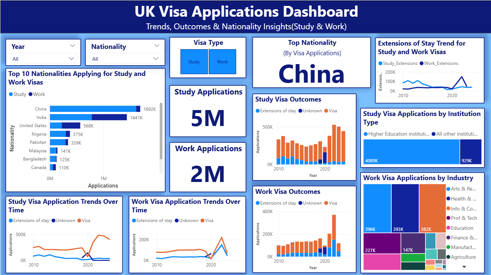

UK Study & Work Visa Analysis
A data-driven analysis of UK visa applications — trends, nationality patterns, and outcome insights from 2010 to 2024.
// Project Overview
This project analyzes the UK Home Office's Managed Migration Historic datasets, focusing on Study and Work Sponsorship visa records. Using SQL Server for data storage and transformation, and Power BI for visualization, the team built an interactive dashboard that reveals migration trends, nationality patterns, and sponsorship outcomes across 14 years of data.
// Key Questions Explored
// Methodology
Downloaded Study & Work Sponsorship datasets from Data.gov.uk (UK Home Office open data), covering 2010–2024.
Imported into SQL Server. Standardized column names, fixed data types, and created 4 clean tables: Study/Work by Nationality and by Institution/Industry.
Built relationships in Power BI across Year, Visa Type, Nationality, and Industry. Created custom DAX measures for totals, approvals, and extensions.
Built interactive Power BI dashboards with slicers, drill-throughs, tree maps, and line/bar charts for end-to-end exploration.
// Key Insights
// Dashboard
